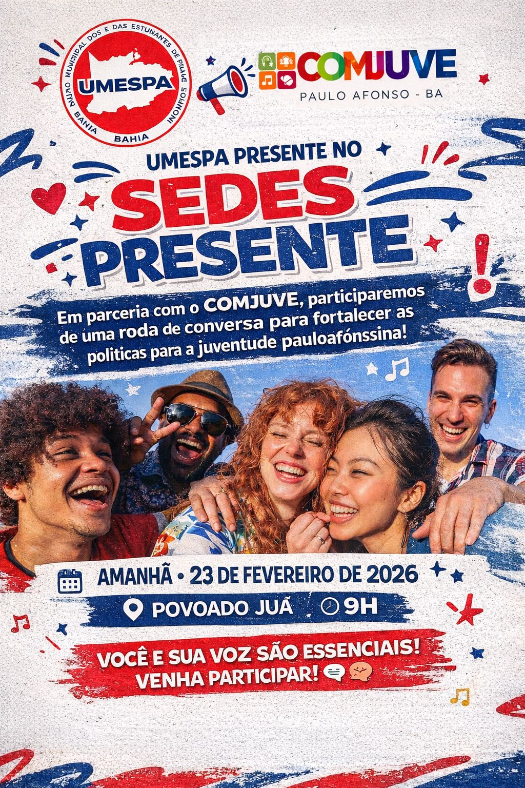
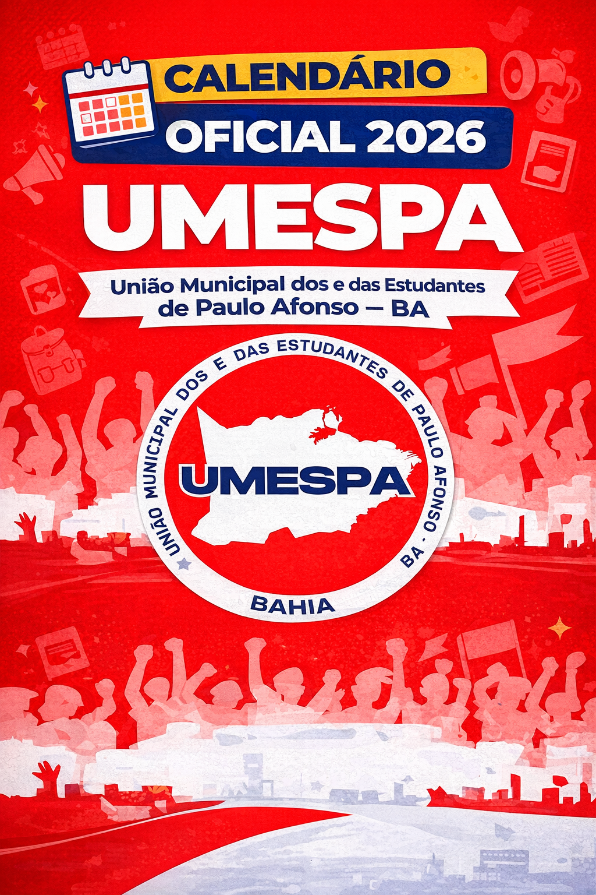
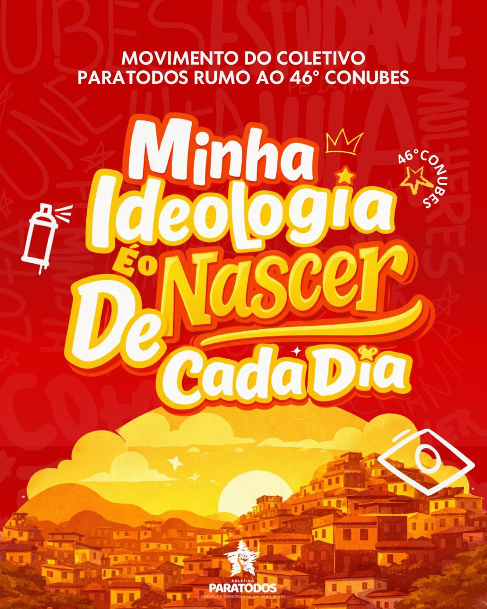

Uma ação em parceria com o Conselho Municipal de Juventude de Paulo Afonso - COMJUVE.
NOTA DE PESAR: A União Municipal dos e das Estudantes de Paulo Afonso manifesta seu mais profundo pesar pelo falecimento de Flávia Barros dos Santos, estudante do 4º período do curso de Direito da UNIRIOS. Neste momento de dor e consternação, nos solidarizamos com seus familiares, amigos, colegas de curso e toda a comunidade acadêmica. Não há palavras capazes de expressar o vazio deixado por uma vida interrompida de forma tão trágica. A perda de Flávia não representa apenas um luto individual, mas evidencia uma realidade dolorosa que ainda persiste em nossa sociedade. O feminicídio é uma violência que não pode ser naturalizada. É urgente que, enquanto sociedade, reafirmemos nosso compromisso com a defesa da vida, da dignidade e dos direitos das mulheres. Que a memória de Flávia seja um chamado permanente à conscientização, à luta por justiça e à construção de um mundo onde nenhuma mulher tenha sua história interrompida pela violência. Nos unimos em solidariedade e respeito, desejando força e conforto a todos que sofrem com essa perda. Diretoria da União Municipal dos e das Estudantes de Paulo Afonso – UMESPA
Local: Sede do GEUPE/UMESPA, Colégio Carlina
Local: Sede do GEUPE/UMESPA, Colégio Carlina
Acesse portarias, editais e resoluções oficiais da entidade.

Uma ação em parceria com o Conselho Municipal de Juventude de Paulo Afonso - COMJUVE.
Participação da UMESPA na Reunião Ordinária do COMJUVE.

Divulgação do Calendário Oficial da UMESPA 2026!

Movimento do Coletivo ParaTodos rumo ao 46° ConUBES!